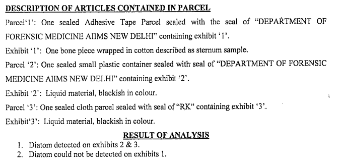
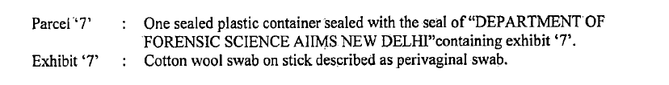
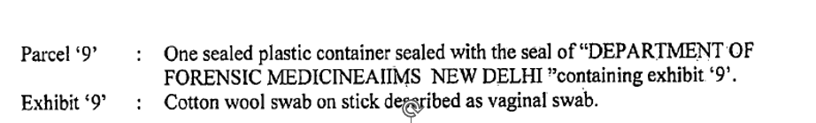
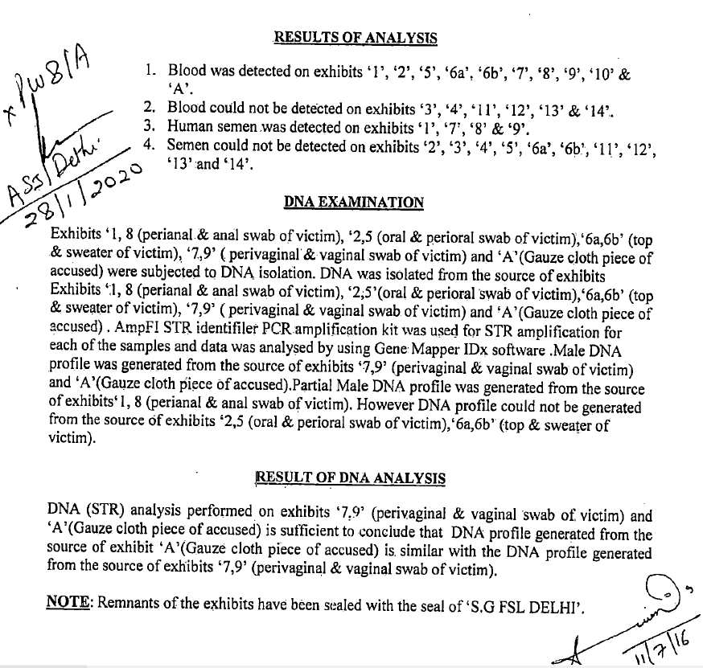

$~1
* IN THE HIGH COURT OF DELHI AT NEW DELHI
Date of Decision: 4th August, 2026
Uploaded on: 11th August, 2026
# CNR No. DLHC010004992025
+ CRL.A. 39/2025 and CRL.M.(BAIL) 66/2025
SHEIKH YASIN .....Appellant
Through: Ms. Aishwarya Rao, Adv. (DHCLSC)
with Ms. Mansi Rao, Adv. (M:
9871598522)
versus
STATE NCT OF DELHI & ANR. .....Respondents
Through: Mr. Ritesh Kumar Bahri, APP with
Ms. Divya Yadav and Mr. Lalit
Luthra, Advs. with Mr. Yad Ram
Yadav PS Jamia Nagar.
Mr. Mohit Chaurasia, Adv. for Victim.
CORAM:
JUSTICE PRATHIBA M. SINGH
JUSTICE VIKAS MAHAJAN
JUDGMENT
Prathiba M. Singh, J.
1. This hearing has been done through hybrid mode.
2. The present appeal has been filed by the Appellant under Section 415(2) read with Section 528 of the Bharatiya Nagarik Suraksha Sanhita, 2023 read with Section 374(2) read with Section 482 of the Code of Criminal Procedure, 1973 assailing the judgment dated 16th July, 2024 as also the order on sentence dated 19th September, 2024, both passed by the ld. Additional Session Judge (SC-POCSO), South East, Saket Court, New Delhi in Sessions Case No. 1537/2016. The present case arises out of FIR No. 192/2015 registered at PS. Jamia Nagar.
3. Vide the impugned judgment, the Appellant has been convicted under Sections 363/377/302/201 of the Indian Penal Code, 1860 and under Section 6 of the Protection of Children from Sexual Offences Act, 2012 (hereinafter, 'POCSO Act'). The Trial Court has placed reliance upon the FSL report i.e., Ex. PW8/A to arrive at the conclusion that the victim was subjected to sexual assault by the Appellant. Further, reliance has also been placed upon the testimony of PW-1: Mohammad Jahangir, who was acquainted with the Appellant and has been referred to as the 'last seen witness', to conclude that it was the Appellant who had kidnapped the victim and was seen taking the victim in an unconscious state on the intervening night of 14th and 15th February, 2015. The relevant findings of the Trial Court are as under:
"86. A combined reading of the FSL report of Biology Department, Ex. PW8/A, with the injuries shown in the postmortem report of the deceased girl, leave no iota of doubt that the victim girl was subjected to sexual assault and the accused had committed or attempted to commit carnal intercourse with the victim girl before she was killed. The factum of aggravated penetrative sexual assault and carnal intercourse upon the victim girl has been duly established by the prosecution through the forensic and medical reports filed on the record. There is no contrary evidence on the record to dispute the said forensic and medical reports, which have more sanctity and more truthfulness than mere oral testimony of the witnesses.
87. Further, it is also pertinent to refer to the testimony of 'last seen witness', who is the star witness of, the prosecution i.e. PW-1. PW-1 was the person from whom accused Sheikh Yasin used to hire cycle rickshaw on rent and used to pay Rs.40/- as rent for one day. PW-1 had categorically deposed before the Court that on 14.02.2015 or 15.02.2015, accused Sheikh Yasin had parked the rickshaw at around 11:00 pm and left.
However, the accused came later in the night at about 02:30 am 03:00 am with a girl aged about 03-04 years, and while he was passing in front of the garage of PW- 1, PW-1 had inquired from him as to where he was taking the girl, upon which accused told him that the said girl was not well and he was taking her to Batla Clinic. Accused also told PW-1 that the father of said girl was coming behind. PW-1 further deposed that on the next day, he came to know that said girl child had died. PW-1 had correctly identified accused before the Court and he had also correctly identified the photograph of victim girl as Ex. P1.
88. PW-1 could not be rebutted even after a sustained cross-examination by the defence. PW-1 had remained consistent in his entire testimony and he even stated that he knew the father of the victim girl, who was residing in the same colony. PW-1 also stated that usually accused used to sleep on the rickshaw, but on the day of incident he did not do so. PW-1 had also deposed before the Court that the victim girl was wearing a frock and a pajama and he also stated that the accused was wearing full black pant and check-shirt. There can be no doubt cast on the testimony of PW-1, who has not only deposed about the fact that the victim girl was seen last with the accused at the night at around 02:30 - 03:00 am, which is the time when the victim girl went missing from outside her house, but he could also tell the clothes which the victim girl, and the accused, were wearing in that night. It also appears that the victim girl was probably made unconscious when accused was taking her, by hitting on her forehead, therefore, contusion have been found on the forehead of the victim girl as per her postmortem report. Due to this reason, the victim girl could also probably not raise any alarm and for this reason, the accused stated to PW-1 that victim girl was not well and, therefore, he was taking her to a clinic.
89. The factum of kidnapping of the victim girl by the accused has been proved through the testimony of last seen witness i.e. PW-1. Further, the factum of sexual assault upon the victim girl, and the fact that she was subjected to penetrative sexual intercourse against the order of nature, has also been proved through her postmortem report and further corroborated by the report of forensic expert. The only probable inference which can be drawn from these proved facts is that after kidnapping the victim girl and committing carnal intercourse with her, the accused had murdered her and, thereafter, dumped her body in the nearby nala/drain. Thus, there is a complete chain of events established by the prosecution, which points only towards the guilt of the accused in the present case.
The accused himself could not rebut either the prosecution witnesses and could not lead any evidence to show that he had not kidnapped the victim girl or that he had not committed carnal intercourse with her or that, he had not murdered her. There is no evidence available on the record to dispute the fact that the accused was not present at the spot or that he had not committed crime as proved by the prosecution.
90. From the abovesaid observations and the entire material available on the record, there is clear and cogent evidence proving the identity of the accused, who was last seen with the victim girl; the manner in which the offence has been committed i.e. the accused first kidnapped the victim girl, made her unconscious so as to feign illness of the victim girl, and thereafter, he raped the victim girl (aged only about 04 years) and even committed carnal intercourse with her; the place of commission of the offence by the accused; the recovery of the dead body of the victim girl from the drain / nala, where the accused had dumped her after committing the offence of rape upon her; the entire course of investigation including the documents prepared; and the medical evidence explaining the cause of death of the deceased /victim girl as well as the forensic evidence, explaining the sexual assault/rape committed upon the victim girl by the accused prior to her death.
91. In the present case, accused Sheikh Yasin had committed a heinous and gruesome crime by not only kidnapping a small girl of tender age of only 04 years, in the dark of the night, and then committing sexual assault upon the said little girl and then committing her murder to screen himself from punishment and to escape from the crime committed by him. There is a clear proximity of time when the victim girl was kidnapped from the lawful guardianship of her parents, till the time when the dead body of the victim girl was recovered from the drain/ nala. Moreover, the dead body of the victim girl was recovered only from a distance of 200- 300 mts. from her house, from where she was kidnapped by the accused. Thus, the circumstantial evidence and the 'last seen theory' proved by the prosecution holds ground in the eyes of settled law and has duly supported the case of the prosecution.
92. The criminal mindset with which the accused committed the said offence is quite evident from the entire material brought by the prosecution during the trial and there is no broken chain of events and the entire evidence led by the prosecution is sound and plausible and leads to an inescapable conclusion that accused Sheikh Yasin had committed the offences for which he has been charged and for which he is facing trial before this Court. There is nothing which could shatter the veracity of the prosecution witnesses or falsify the claim of the prosecution. The prosecution witnesses have materially supported the prosecution case and the testimonies of the prosecution witnesses do not suffer from any infirmity, inconsistency or contradiction and are consistent and corroborative. The evidence of the prosecution witnesses is natural and trustworthy and substantiated by medical and forensic evidence and the witnesses of the prosecution have been able to build-up a continuous link.
93. Thus, from the given facts and circumstances of the case and the entire material available on the record, accused Sheikh Yasin is held guilty for the commission of the offences u/s 363/377/302/201 IPC as well as u/s 6 of POCSO Act, 2012.
94. In view of the foregoing discussions and conclusions, accused Sheikh Yasin is convicted for the offences under section u/s 363/377/302/201 IPC as well as u/s 6 of POCSO Act, 2012."
4. The Trial Court, thereafter, awarded sentence and compensation in the following terms:
"22. Hence, this Court deems it fit to sentence the convict as under:-
(i) To undergo Rigorous Life Imprisonment and to pay a fine of Rs. 50,000/- for committing the offence punishable u/s 6 of the POCSO Act, 2012, and in default of fine, the convict is to undergo Simple Imprisonment for a period of six months.
(ii) To undergo Rigorous Life Imprisonment and to to pay a fine of Rs. 50,000/- for the offence punishable u/s 302 IPC, and in default of fine, the convict is to undergo Simple Imprisonment for a period of 02 years.
(iii) To undergo Rigorous Life Imprisonment and to pay a fine of Rs. 50,000/- for the offence punishable u/s 377 IPC, and in default of fine, the convict is to undergo Simple Imprisonment for a period of 06 months.
(iv) To undergo Rigorous Imprisonment for a period of 07 years and to pay a fine of Rs. 50,000/- for the offence punishable u/s 363 IPC, and in default of fine, the convict is to undergo Simple Imprisonment for a period of 06 months.
(iv) To undergo Rigorous Imprisonment for a period of 07 years and to pay a fine of Rs. 50,000/- for the offence punishable u/s 201 IPC, and in default of fine, the convict is to undergo Simple Imprisonment for a period of 06 months.
23. Out of the total fine imposed upon the convict, Rs.
20,000/- shall be disbursed towards the expenses incurred by the State in the present case. The balance amount of fine shall be paid as compensation to the family members/LRs of the victim.
XXXX 27. In appropriate cases, it is the duty of the Court u/s 357 and 357A Cr.PC to direct for payment of compensation for any physical, mental trauma caused to the victim and for her rehabilitation. After carefully pursuing the report submitted by DSLSA, und in terms of the guidelines enshrined under the Delhi Victim Compensation, Scheme, 2018 as interpreted by the Hon'ble High Court of Delhi X v. State of NCT of Delhi in Crl. Appeal no. 63/2022 decided 20.10.2022, the victim, who was aged only about 04 years at the time of commission of the offence, is hereby granted compensation to the tune of Rs. 11,00,000/- (Rupees Eleven Lakhs Only) to be disbursed to the family members/LRs of the deceased victim in accordance with law, by the Ld. Secretary, DLSA, South East"
Facts
5. The incident in the present case occurred on the intervening night of 14th and 15th February, 2015, when the victim, who was a girl child of 3 to 4 years of age, was found missing from her jhuggi at Jhuggu Noorjahan, Plot No.288, near Variation Public School, Dhobhi Ghat, Batla House, Jamia Nagar, New Delhi in the jurisdiction of PS. Jamia Nagar.
6. The allegation qua the Appellant, as per the father of the victim is that the victim was staying with the mother and grandmother and suddenly in the early hours of 15th February, 2015, they found that the victim is missing. The family members of the victim immediately raised a hue and cry. Upon the same, the neighbourhood persons also joined in the search for the victim.
7. A complaint was also lodged with the PS. Jamia Nagar at 4:00 AM and, thereafter, search was conducted. The victim's body was then recovered from a swamp area, which is described as a nala very near to the residence of the victim.
8. FIR No. 192/2015 was then registered at PS. Jamia Nagar. The Medico-Legal Case (hereinafter, 'MLC')/Postmortem of the victim was also conducted. Charges were framed qua the Appellant on 18th January, 2017.
9. During the course of the trial, the prosecution had cited 26 witnesses, out of which 24 witnesses were examined. The main witness was PW-1:
Mohammad Jahangir, who was running a rickshaw garage in the vicinity of the victim. PW-1 during the course of the trial gave evidence that his rickshaw was taken on rent by the Appellant on the date of the offence i.e., 14th February, 2015. As per PW-1, the Appellant had taken the rickshaw of the PW-1 on rent even on earlier occasions.
10. The said PW-1 stated that he had witnessed the Appellant carrying the victim aged about 3 to 4 years at about 2:30- 3:00 A.M. and upon being enquired as to why he was carrying the victim, the Appellant is stated to have said that he was taking the victim to the Batla clinic.
11. During the course of the investigation, PW-1 was the one who had identified the Appellant and he was then arrested on 1st April, 2015 at 8:00 P.M. As per the case of the prosecution, the evidence of the PW-1 is the main evidence, which has also been relied upon by the Trial Court.
12. PW-2: Mohammad Gaffur is also a public witness, who stated that he is a vegetable seller and as per his evidence, the clothes of the Appellant were lying near his jhuggi and the clothes of his brother-in-law, which were lying outside his jhuggi were also missing on the said date i.e., 15th February, 2015.
The police is stated to have picked up the clothes of the Appellant from outside the jhuggi of PW-2.
13. PW-4, the father of the victim gave his evidence and deposed that his child was suddenly found missing in the middle of the night and immediately everybody including the family members and the neighbourhood people had started the search. According to PW-4, he went to the police station at about 4:00 AM and a complaint was lodged of the missing girl child.
14. During the search, the body of the victim was found 100 to 200 meters away from her residence in the swamp area. The victim was identified on the basis of photographs produced by the victim's mother. Thereafter, an ambulance was called and the body of the victim was sent to the hospital. The MLC of the victim was prepared by PW-5: Dr. Amber Parwaiz on 15th February, 2015 at about 1:26 PM.
15. PW-8:Dr. Sunita Gupta, who was a Senior Scientific Officer (Biology) from FSL, Rohini gave evidence that the DNA of the Appellant matched with Ex.7 & 9 i.e., 'peri vaginal and vaginal swab' of the victim. The evidence of PW-8 is extremely crucial and the same is set out below:
"On 25.03.2015, I was working as Senior Scientific Officer (biology) and on that day 14 parcels were received in FSL vide case FIR no. 192/15 PS Jamia Nagar vide letter No. 638/SHO/Jamia Nagar and the same was assigned to me for examination and reporting.
The seal of the said parcels were intact. I had also received one another sealed parcel vide letter no. 841/SHO/Jamia Nagar. The seal of the said parcel was intact. I carefully examined the parcels and prepared my detailed report in this regard vide memo Ex.PW8/A bearing my signature at point A. As per my report, DNA profile generated from the source of Ex.A (gauze cloth piece of accused) is similar with the DNA profile generated from the source of Ex.7, 9 (peri vaginal and vaginal swab of victim).
XXXXX by Sh. Sunder Lai, Ld. LAC for accused.
There are various methods for DNA profiling but generally STR method is used. It is wrong to suggest that the STR method is inaccurate. It is correct that as per my report partial male DNA profile was generated from source of Ex.1, 8 (peri anal and anal swab of victim). As it was partial DNA profile no comparison could be done with the DNA profile generated from the source of exhibits of the accused. No male D.NA profile could be generated from the nail clippings of the victim because there was no external material in the nail clippings of the victim. The examination was not videographed or photographed. Vol. The same is generally not done unless there is direction from the court. There is no scope of any error in the examination or preparation of report of DNA analysis. It is wrong to suggest that I am deposing falsely. It is wrong to suggest that I did not follow the correct procedure or made an improper analysis or examination of the exhibits. It is wrong to suggest that the report was submitted in a routine manner at the instance of IO. It is wrong to suggest that no DNA profile of the accused could be detected from the source of the exhibits of the victim. It is wrong to suggest that the report is wrong and fabricated."
16. PW-19: Dr. Versha, Laboratory Assistant, RFSL, Chankyapuri gave evidence to the effect that diatom detected on Exhibit No.2 and 3 i.e., liquid material from the drain, was not detected in the bones of the victim which was labelled as Exhibit 1. The relevant portion of the said FSL report dated 24th June, 2016 reads as under:

17. A perusal of the FSL report dated 11th July, 2016, which is Ex.PW- 8/A, would show that a Male DNA profile was generated from the source of Exhibits 7 & 9 and the same matches with the source of Exhibit A i.e., the Appellant. The relevant portion of the said FSL report reads as under:



Submissions on behalf of the Parties
18. Ms. Rao, ld. Counsel appearing as legal aid Counsel for the Appellant has made her submissions. Ld. Counsel submits that the evidence of the PW- 1 and PW-2 are not reliable. It is her submission that there is no explanation as to why PW-1 did not report the incident to the police when PW-1 is stated to have seen the Appellant carrying the small girl child at 2:30-3:00 A.M. in the morning. According to ld. Counsel, this is an unusual situation inasmuch as PW-1 did not even wait to see if the father of the girl child was also joining the Appellant or not.
19. It is further argued that PW-1 did not report the said incident to the police on his own and remained silent until the following morning, when he came to know of the murder of the child. That PW-1 disclosed the incident only after the police enquired with him and not of his own volition.
Accordingly, it is contended that his testimony ought to be viewed with doubt.
20. Ld. Counsel further submits that the absence of diatom in the bone of the victim is inexplicable, inasmuch as the body was recovered from the nala/swamp. It is submitted that the fact that no diatom was found would also indicate that the body had not been lying in the said nala/swamp for a long time but had been placed there only for a brief period, just when the police had raised hue and cry and commenced the search operation.
21. Insofar as the PW-2 is concerned, it is the submission on behalf of the Appellant that the said witness is a planted witness as he could not give any clarification as to how the clothes of his brother-in-law went missing and whether he was present when the police recovered the pants of the Appellant from outside of his jhuggi along with two sim cards or not.
22. Ld. Counsel for the Appellant submits that the FSL report dated 11th July, 2016 also does not show conclusively that there is a match and in respect of two of the samples i.e., Exhibit 1 & 8, there was no matching report.
Further, it is submitted that the victim died out of drowning and not of the strangulation and, thus, the Appellant cannot be blamed for the murder of the victim and hence, cannot be convicted.
23. Finally, it is submitted on behalf of the Appellant that in the FSL reports, the biomarkers, which are usually to be given in such reports, are also missing.
24. On the other hand, Mr. Bahri, ld. APP submits that PW-1, is owner of cycle rickshaw garage, from whom rikshaw was taken on rent by the Appellant. Thus, PW-1 is a fully credible and reliable witness and his testimony cannot be doubted just on the basis of some speculative submissions. It is his submission that PW-1 knew the Appellant very well.
He, in fact, saw the child/victim being carried that morning by the Appellant.
PW-1 was also familiar with the area and knew the movements of the Appellant, who used to run his rickshaw after taking the same on rent from PW-1.
25. Further, it is submitted by Mr. Bahri that the FSL report dated 11th July, 2016 is also conclusive of the presence of Male DNA in the vaginal and anal swabs of the victim, which leaves no manner of doubt that the Appellant is guilty.
26. Ld. APP has placed reliance upon the following decisions:
• DRY v. State of NCT of Delhi, 2026:DHC:448-DB • XXXX v. State, 2026:DHC: 4907-DB
27. Finally, according to the ld. APP, the combined reading of testimonies of PW-1, PW-4 and PW-13 with the postmortem report would clearly show and establish that sequence of events constitute last seen evidence in terms of missing child.
28. Mr. Mohit Chaurasia, ld. Counsel appearing as legal aid Counsel for the Complainant has also supported the submissions of the ld. APP and submits that considering the nature of the offence and the age of the victim, no sympathy ought to be shown to the Appellant.
Analysis and Findings
29. The Court has heard the submissions on behalf of the parties and perused the record. The testimony of PW-1 dated 13th March, 2019 which is the crucial evidence in the present case, reads as under:
"I am running a cycle rickshaw garrage at dhobi ghat at Batla House. In the year 2015 accused Sheikh Yasin had taken my cycle rickshaw on rent for which he was paying me Rs. 40/- per day who was from Maldah, West Bengal.
Sheikh Yasin used to park the cycle rickshaw in the garrage in the night time and he used to stay in the garrage itself. Probably on 14.02.2015 or 15.02.2015 Sheikh Yasin present in the court today (correctly identified) had parked the rickshaw and left at about 11.00 pm. Later on in the night at about 02.30/03.00 am came with a girl aged about 3 or 4 years was passing from the front of my garrage and then I had inquired from the accused as to where he was taking the girl child on which he had replied that father of the girl child also coming from behind and that he is taking the child to the doctor at Batla Clinic. Later on, on the next day I came to know that the said girl child had died and police had made inquiry from me and also inquired about the accused on which I told the police that the accused had left my garrage and is not available. Later on the accused was arrested by the police and was brought to my garrage and shown to me to identify him and then I had identified him as Sheikh Yasin who was carrying the girl child two days prior to the said day. I can identify the girl child whom the accused was carrying in his arms on that day.
The said child girl was later on found dead in a nala near Batla House.
At this stage, one photograph has been taken out from the judicial file and shown to the witness on which witness states that the photograph is of the said child who was being carried by the accused on the said day. The photograph is Ex.P-1.
XXXX by Sh. Vishal Singh, Ld. LAC for accused.
I am illiterate. Accused had taken my rickshaw on rent for 15 days. I do not remember the details but I maintain a register in which all those details are mentioned. I know Hasim as he is residing in the same colony. At the time when the accused was carrying the child I was not knowing that she is the daughter of Hasim. Vol. Accused had told me that the child's father is following him "wo peeche peeche aa raha hai". I was alone at that time. I do not know whether the child was asleep or awake at the time when I saw the accused carrying her. Vol. The accused told me that "wo bimar hai aur usay doctor ke pass Batla Clinic le ja raha hoon". I did not check the child to verify whether she is unwell, running fever or not. I also did not ask the child about her health. I did not bother to verify Hasim about the ailment of his daughter. Vol. Accused had told me "Hasim ki bachi hai, Hasim peeche aa raha hai". I did not offer to drop him off to the hospital in my rickshaw or by any other means. The spot where I saw the accused carrying the child is just 5-7 minutes away from the Batla Clinic. I came to know about the murder of the child on 16.02.2015. I did not deem it fit to inquire from the father of the child i.e. Hasim about her health either on 14.02.2015 or 15.02.2015. I had come to know from the general public about the murder of the child. There was no occasion for me to go to the police and tell them about the fact that I had seen the accused carrying the child, after I came to know about her murder on 16.02.2015 as police had already started inquiring from me/visiting me to seek information about the accused. Police came to me on 16.02.2015. I do not remember the exact date but I had met the police after 2-3 days after 16.02.2015 as once I came to know that police was looking for me as police had come to know that the accused was plying my rickshaw I got scared and I ran away. I had not got done the police verification of the accused at the time we had approached me for taking my rickshaw on rent for plying. I do not know whether accused was known to Hasim as I had not been on visiting terms with Hasim, hence, I do not know who all used to come to the house of Hasim. On the day of Incident i.e. 14/15.02.2015 as I do not remember the exact date, the accused had parked the rickshaw at Dhobi ghat, he did not pay me the rent on that day and when I had asked him why he had not paid the rent he said that he was taking the child of Hasim to Batla Clinic as I have already stated above. It is wrong to suggest that I used to charge extra rent from the accused, which was objected by him and because of which we had quarreled once. It is wrong to suggest that on the day of incident he did not pay me the rent as he was annoyed with me as I was charging extra rent from him.
The accused was not employed with me, he merely used to take my rickshaw on rent as other rickshaw-pullers do. On the day of incident he had parked the rickshaw at the dhobi ghat where he usually park the same and left without paying the rent. Accused usually used to sleep on the rickshaw but on that day he did not do so.
I do not remember the colour of the clothes which the child was wearing but she was wearing frock and pajama as far as I can recall. I did not notice whether she was wearing any slippers or shoes. I did not notice any particular mark either on the face or any body part of the child. The child was around 2 to 2.5 feet in height. The accused was wearing full black pant and check shirt on the day when I had seen him carrying the child. I had seen the accused carrying the child and thereafter I have seen her photograph today for the first time. It is wrong to suggest that I am deposing falsely. It is wrong to suggest that I did not see the accused carrying the child on that day. It is wrong to suggest that I am deposing falsely at the instance of Hasim and the police officials."
30. A perusal of the above testimony reveals that PW-1 was extremely well acquainted with the Appellant. The Appellant was paying PW-1 a sum of Rs.40/- per day for taking his rickshaw on rent. The Appellant, according to PW-1, had parked the rickshaw at 11:00 PM on 14th February, 2015 and had not paid the rent for that day. According to PW-1, immediately, a few hours later itself i.e., around 2:30 AM to 3:00 AM, he saw the Appellant carrying the girl child in front of this garage and the explanation which was given by the Appellant that he was taking the child to Batla clinic. PW-1 also said that the Appellant had informed him that the father of the victim was also joining from behind. In the opinion of this Court, this was something that PW-1 could have accepted as a plausible explanation at that time, as he had no reason to doubt that something untoward would be done to the victim, as he was acquainted with the Appellant as also because taking a young girl to the clinic could have been because she is unwell.
31. The cross-examination of PW-1 reveals that the next day itself, i.e. 15th February, 2015, the police had made enquiries from him and, therefore, the Court cannot suspect the PW-1 as being the planted witness. The fact that the PW-1 admitted that since his rickshaw was being used by the Appellant and he ran away, seems like a normal human behaviour and conduct, which cannot lead to any suspicion qua PW-1.
32. Insofar as PW-4, the father of the victim is concerned, he has clearly given the chronology of events leading to the missing child, the police complaint, detection of the body in the nearby nala/swamp, etc. In the opinion of this Court, PW-4's testimony is also fully credible.
33. PW-8: Dr. Sunita Gupta, from her statement extracted above, has given clear testimony to the effect that she had conducted DNA testing in this matter and supports the FSL report dated 11th July, 2016. A perusal of the testimony of PW-8 would show that this testimony read with FSL report dated 11th July, 2016 leaves no manner of doubt that the Appellant's DNA was found on the 'peri vaginal and vaginal swab' of the victim. Even the absence of mention of biomarkers itself cannot, be a reason to doubt the report and the testimony of PW-8 which is quite clear especially when read with the FSL report and the conclusions therein.
34. The Supreme Court in the decision in Ravishankar v. State of M.P., (2019) 9 SCC 689 held that that DNA test, if not infallible, can be a strong foundation for findings in a criminal case. The relevant portion of the said decision reads as under:
"37. Essentially, this is a case of circumstantial evidence which is supported by ocular and medico-scientific evidence. The prosecution has effectively proved that the deceased was "last seen" with the appellant and on earlier occasions too was seen being enticed by the appellant.
DNA evidence using the established STR technique has proved that the appellant committed sexual intercourse with the deceased. The deceased has been proven to be a minor using school records. Various injuries on her body along with signs of struggle proved that such crime was committed in a barbaric manner. Death has been established as being homicidal and caused by throttling, and has been estimated during the time when the deceased was seen with the appellant. A slipper has been recovered through the appellant which has later been identified as belonging to the deceased, giving finality to the circumstantial chain. The appellant has been unable to offer any alibi and his defence merely rests on deflecting guilt on to the family of the deceased, which is without a shred of evidence. Further, no effective challenge has been made against any medical or DNA reports. There can thus be no second opinion against the guilt of the appellant and his consequential conviction.
38. The findings of kidnapping, rape, resultant death and destruction of evidence have hence been proven beyond reasonable doubt, as evidenced by concurrent findings of the courts below. Even this Court on 10-1-2018 [Ravishankar v. State of M.P., 2018 SCC OnLine SC 3475] has confirmed the conviction of the appellant keeping in view the fact that DNA typing carries high probative value for scientific evidence, is often more reliable than ocular evidence. It goes without saying that in (i) Pantangi BalaramaVenkata Ganesh v. State of A.P. [Pantangi Balarama Venkata Ganesh v. State of A.P., (2009) 14 SCC 607 : (2010) 2 SCC (Cri) 190] , and (ii) Dharam Deo Yadav v. State of U.P. [Dharam Deo Yadav v. State of U.P., (2014) 5 SCC 509 : (2014) 2 SCC (Cri) 626] , this Court has unequivocally held that DNA test, even if not infallible, is nearly an accurate scientific evidence which can be a strong foundation for the findings in a criminal case. "
As per the above decision, the last-seen evidence coupled with medical evidence is sufficient to convict the accused. In this case, the last-seen evidence is given by PW-1 and the FSL report has been proved by PW-8.
There was no reason why the DNA of the Appellant was detected in the vaginal swab of the victim. Considering that the body was lying in a swamp/Nala the absence of a conclusive DNA match on the other swabs would not give the benefit of doubt to the Appellant. In fact it would be to the contrary that some traces of the Appellant's semen may have been eliminated due to the water but in the vaginal swab the same was detected as it may not have been washed off.
35. Further, a Co-ordinate Bench of this Court in DRY (Supra) upheld the conviction of an accused person on the basis of the DNA testing despite the prosecutrix having turned hostile. The relevant portion of the said decision reads as under:
"32. The social circumstances and the economic status of the family may have compelled the Prosecutrix and her mother to give contradictory statements or to turn hostile.
However, in such cases the Court cannot completely ignore the scientific evidence which has come on record.
In the present case, the DNA testing, being conclusive and unimpeachable evidence establishing the factum of physical relationship of the Appellant with the minor daughter, leaves no scope for doubt, and accordingly, the conviction of the Appellant cannot be faulted. "
36. Insofar as the aspect of murder is concerned, even if the child was alive when the Appellant had left her in the nala/swamp, the circumstances indicate that the child must have been extremely traumatised as the child had suffered injuries in terms of the postmortem report. The child, even if left in alive condition, could not have survived considering the nature of sexual assault caused to her and the place where she was left in the middle of night.
37. Thus, even the conviction for murder cannot be stated to be incorrect or untenable. Accordingly, this Court is of the opinion that the impugned judgment does not warrant any interference and the conviction of the Appellant, in terms of the impugned judgment, is upheld.
38. The compensation awarded by the Trial Court has already been paid to the victim's family.
39. The appeal is, accordingly, dismissed. Pending applications, if any, are also disposed of.
40. Copy of the order to be communicated to the concerned Jail Superintendent for necessary information and compliance.
PRATHIBA M. SINGH JUDGE VIKAS MAHAJAN JUDGE AUGUST 4, 2026/dk/ck